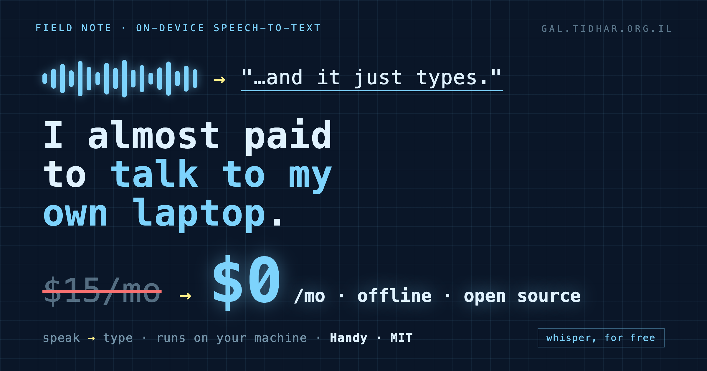

on-device speech-to-text · Handy · Whisper
I almost paid to talk to my own laptop
Someone told me "Whisper is expensive", and I nearly did the obvious thing: go buy a dictation app. I got one keystroke away from a subscription before I noticed the trick I'd fallen for. The transcription was free the whole time - it had been running on my own machine for months. What I almost paid for was the wrapper around it.

The sentence that almost cost me a subscription
"Whisper is expensive." It's the kind of line that sounds true, so you act on it. And the reflex - mine, anyway - is to reach for a nicely-packaged app with a hotkey and a menu-bar icon that turns speech into text. There are good ones. Most of them cost twelve to fifteen dollars a month, forever, to do a thing your computer can already do.
Here's the part I'd forgotten while nodding along: there are three different "Whispers", and only some of them cost anything.
- The OpenAI Whisper API - cloud, about
$0.006/min. Real money at volume. - A paid dictation app (Wispr Flow, superwhisper, and friends) - a monthly subscription for the convenience layer.
- whisper.cpp running locally -
$0. Just your CPU.
I was already running the third one. My Instagram-to-ideas pipeline transcribes reels with a local whisper-cli and a model file sitting on disk - no API, no bill, it's been humming along for weeks. "Whisper is expensive" was never about Whisper. It was about the app.
The bait: "open source" that isn't free
So I went looking for a free one, and walked straight into the second trap. I installed a well-known, "open-source" dictation app - 5,700 stars, GPLv3, the works. Felt safe. Then it opened onto a "Buy License" screen: activate a key, or start a 7-day trial.
Both things are true at once, and that's the sleight of hand. The source is open - you're free to clone it and build it yourself with Xcode. The compiled app you actually download is a paid product. "Open source" told me nothing about whether the thing in my Applications folder was free. It wasn't.
The part everyone gets backwards
Step back and the whole category looks strange. Speech-to-text has two pieces: the model that turns sound into words, and the plumbing - a global hotkey, capturing the mic, typing the result into whatever app has focus. The model is the hard, magical part. The plumbing is a weekend project.
And the model is exactly the part that quietly went free. On-device speech models crossed the "good enough, and fast" line a while ago and nobody sent a memo. So the subscriptions are, increasingly, charging rent on the easy half - the hotkey and the polish - while the hard half runs for nothing on the laptop you already own.
You were never paying for the intelligence. You were paying for the wrapper around it.
What I actually kept
The tool that ended the search is Handy - cjpais/Handy, 27,000+ stars, MIT, and free in the way that actually matters: the app you install costs nothing, forever. Its own homepage says the quiet part out loud - "accessibility tooling belongs in everyone's hands, not behind a paywall." It runs 100% offline: your voice never leaves the machine.
brew install --cask handyOn first launch it asks which transcription model to download. There's a menu of them; for English dictation the pick is easy:
| Model | Why | Size |
|---|---|---|
| Parakeet EN 0.6B | Fast + accurate + streaming. The daily driver for English. | 697 MB |
| Whisper Medium | 99 languages (incl. Hebrew), but slower - add it only if you need it. | 793 MB |
| Canary 180M | Tiny and instant, lower accuracy - for weak hardware. | 208 MB |
Grant it Microphone and Accessibility (that second one is what lets it type into any app), bind a hotkey, and that's the whole setup. Hold the key, talk, release - text appears where your cursor is. No account, no key, no cloud, no meter.
The general lesson, if you want one
Every so often a capability that used to be a product quietly becomes a feature of your hardware - and the market keeps selling it for a while out of momentum. Transcription is there now. The tell is simple: when a subscription's core magic runs perfectly well offline, on your own silicon, you're not paying for the magic anymore. You're paying for someone else's hotkey.
So before you subscribe to something that turns your voice into text, your face into a login, your notes into a summary - ask which half you're actually renting. Often the expensive-sounding half is already sitting on your disk, free, waiting for a nine-line hotkey. Drive the model you own; pay only for the parts you genuinely can't run yourself.
I deleted the paid one. I'm dictating this sentence into the free one.
Take it
MIT, 100% offline, free-to-use for real. One command:
brew install --cask handy
# open it, download Parakeet EN 0.6B, grant Mic + Accessibility, set a hotkey.